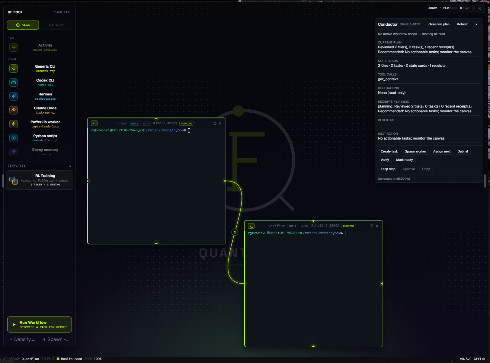

1
2
3
5
6
Proposed
1Status badge system
One token set for every tile header, swapped for the loose RUNNING / SHELL / AUTO labels. Color = state, always; a dot means live.
Running
Idle
Queued
Error
Done
Applied to a tile header:
>_
Coder
Shell
@shell‑40151
Running
Proposed · glass earns it here
Spawn
Spawn Verifier
shell · wslSpawn Hermes (orchestrator)
Route
↑↓ navigate · ⏎ run · esc dismiss
Proposed
Verifier spawned
@shell‑2‑35692 · routed from Coder
Live
4
Proposed
3Status‑bar pills
The flat Health good · Zoom 100% text becomes scannable pills — health carries the same dot semantics as tiles.
Health good
Health degraded
Zoom 100%
Tiles 2
5In‑flight count
The cable 2 badge → a defined token: number of packets currently routing this edge. Pairs with the live‑green flow language.
Proposed
6Conductor state badges
Surface BLOCKERS / NEXT ACTION as badges so the panel is glanceable, not all body text.
No blockers
Monitor canvas